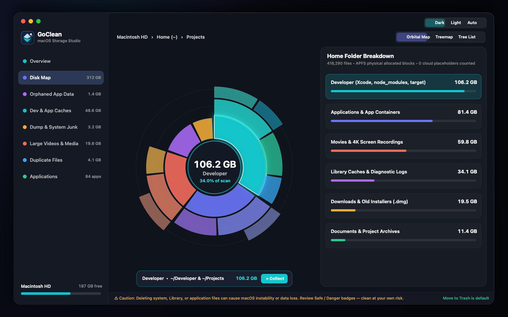

48+ GB
Dormant Dev Bloat
Old node_modules, Xcode DerivedData, Rust target/, SwiftPM .build, and global npm/Homebrew/Cargo caches sitting untouched for months.
GoClean is an open-source, 100% native macOS disk analyzer, smart cleaner, and deep uninstaller.
Explore real APFS physical storage through the Luminous Orbital Map, wipe forgotten
node_modules & orphaned app leftovers, and cleanly remove apps installed via
App Store, Homebrew, or direct curl.
Finder hides ~/Library, dragging an app to Trash leaves gigabytes of caches behind,
and developer toolchains multiply across forgotten projects.
Old node_modules, Xcode DerivedData, Rust target/, SwiftPM .build, and global npm/Homebrew/Cargo caches sitting untouched for months.
Deleted apps leave behind Application Support, Containers, Caches, Saved State, and stale LaunchAgents forever.
Zero Electron overhead. Built on POSIX fstatat + Swift 6 structured concurrency for blazingly fast scans and minimal RAM footprint.
Runs strictly offline on your Mac. Counts dataless iCloud/OneDrive placeholders as 0 local bytes so you see true SSD usage.
Clean frosted glass surfaces, Dark & Light mode parity, and zero clutter. All screenshots below use clean sample data.

Switch effortlessly between Orbital Map, Treemap, and Tree List views. Hovering any slice highlights the inspector row, shows physical APFS allocation, and lets you preview with Quick Look or stage in one click.
From live APFS scanning to Safe/Danger smart buckets and Homebrew dependency-aware uninstalls.
Measures true physical blocks (st_blocks * 512), detects macOS SF_DATALESS cloud placeholders, deduplicates hard links by inode, and avoids macOS root firmlink loops.
Cross-references installed app bundles & CLI tools against 9 ~/Library locations while protecting Apple & core runtime identifiers, grouping leftovers with confidence levels.
Pinpoints dormant node_modules (showing days inactive), Xcode DerivedData, Rust target/, SwiftPM .build, CocoaPods, Gradle, Python .venv, and Homebrew/npm/pip/Cargo caches.
Finds .ips, .crash, .dmp, .core, and .hprof dump files, forgotten .dmg/.pkg installers in Downloads, Xcode DeviceSupport, and oversized logs.
Surfaces space-hungry recordings with async QuickLookThumbnailing previews and hides macOS system & Library files by default so you only see your media.
Exact byte-size grouping → 16 KB partial fingerprint → full streaming CryptoKit SHA-256 verification. Smart Select always guarantees at least one original copy stays protected.
Inspects Mac App Store receipts, live brew info --json=v2 --installed Casks & Formulae (with reverse-dependency Danger warnings and brew uninstall --cask --zap), Direct DMG apps, and standalone curl toolchains (~/.bun, ~/.deno, ~/.nvm, ~/.rustup, ~/.local/bin) alongside every associated ~/Library & config folder.
Disk cleaners should never make you guess. GoClean classifies every file with FileSafetyClassifier,
protects critical OS roots via a non-bypassable SafetyGuard, and routes all deletions through the bottom
Collector Dock using reversible Move to Trash by default.
Removing system, ~/Library, or application files can cause macOS instability or permanent data loss.
Always review staged items in the Collector Dock and keep Time Machine backups active.
Requires macOS 15.0+ and Xcode / Swift 6. Zero external packages to fetch.
git clone https://github.com/codzze/goclean.git
cd goclean
swift test
./scripts/bundle_app.sh
open build/GoClean.app